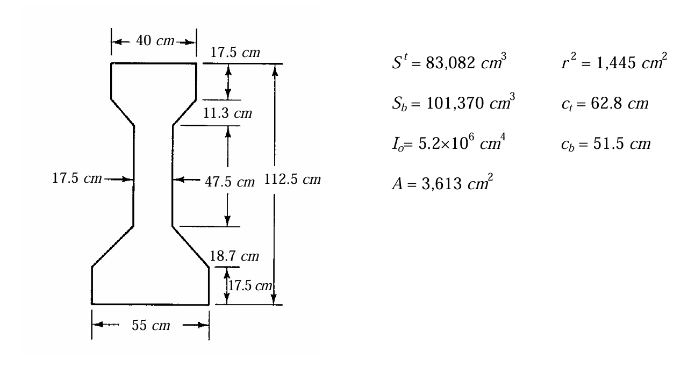
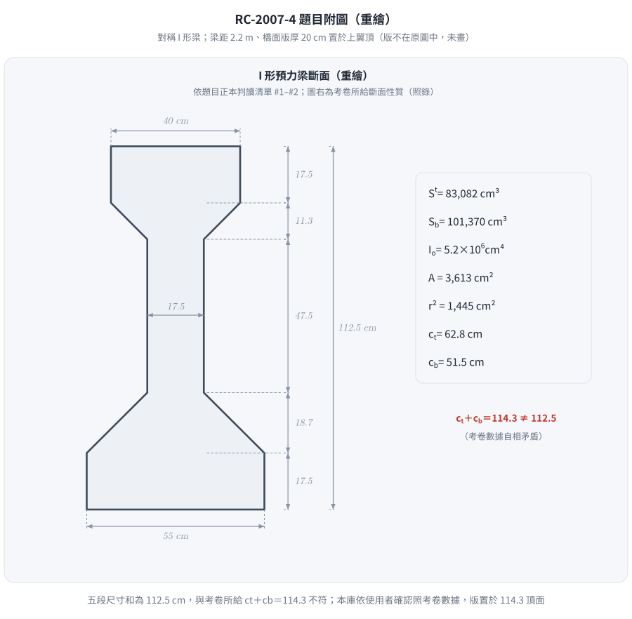
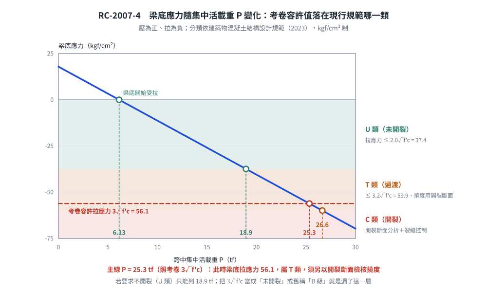

📄 題目正本：考卷原文・附圖・判讀清單（已確認）
RC-2007-4 題目正本
本檔只記錄考卷上寫了什麼、圖上畫了什麼，不含任何解法。解析見同資料夾
RC-2007-4.md。
判讀清單已經使用者確認（凍結）；本檔原則上不再修改（改動須回考卷原圖並記 log）。
| 項目 | 內容 |
|---|---|
| 考卷 | raw/exams/RC-2007_鋼筋混凝土設計與預力.pdf 第 2 頁（背面），第四題；卷首常數見第 1 頁 |
| 考年 | 民國 96 年（2007） |
| 配分 | 25 分 |
| 附圖 | RC-2007-4-fig-1.png（I 形梁斷面與斷面性質，無圖號；考卷原為 1-bit 點陣） |
| 判讀狀態 | 已確認（2026-11-14 使用者確認；影響答案項目使用者選擇：#1 斷面性質照考卷數據，版置於 c_t＋c_b＝114.3 cm 頂面（與圖上總高 112.5 的矛盾於解析 §5 註明）；#7 澆版無支撐（版重由梁單獨承受）；轉錄 2026-11-14；PyMuPDF 110 dpi 全頁目視＋抽出文字核對；附圖以程式依圖上尺寸重算斷面性質核對；盲讀後才比對既有解析） |
1. 考卷原文（逐字）
四、一座跨距 20 公尺簡支 I 形預力梁橋，其梁與梁間距為 2.2 公尺，其斷面及數據如下圖所示，預力梁上之橋面版厚 20 公分，預力梁之混凝土抗壓強度為 350 $kgf/cm^2$，橋面版之混凝土抗壓強度為 280 $kgf/cm^2$，容許壓應力為 $0.4f'_c$，容許拉應力為 $3\sqrt{f'_c}$，預力鋼線容許應力為 13200 $kgf/cm^2$，預力鋼線總斷面積為 21.7 $cm^2$，假設預力損失 20%，鋼線中心離底部最小距離為 20 公分，除了梁及版自重外，還有其他靜載重為 750 $kgf/m$，混凝土單位重為 2,400 $kgf/m^3$，試計算出中間梁在跨距中央能承受之集中活載重。（25 分）
2. 考卷給的公式、附表與參數
- 題文數值：跨距 20 m；梁距 2.2 m；橋面版厚 20 cm；梁 $f'_c=350$、版 $f'_c=280$；容許壓應力 $0.4f'_c$、容許拉應力 $3\sqrt{f'_c}$（照錄，未註明適用階段）；預力鋼線容許應力 13,200、$A_{ps}=21.7$ cm²；預力損失 20%；鋼線中心離底部最小 20 cm；其他靜載重 750 kgf/m；單位重 2,400 kgf/m³。
- 圖旁斷面性質（照錄）：$S^t = 83{,}082\ cm^3$、$S_b = 101{,}370\ cm^3$、$I_o = 5.2\times10^6\ cm^4$、$A = 3{,}613\ cm^2$、$r^2 = 1{,}445\ cm^2$、$c_t = 62.8\ cm$、$c_b = 51.5\ cm$。
- 卷首（第 1 頁）「以下各題之計算所用之規定及常數如下（※如有條件不足時，請自行合理假設）」：靜載重因數 1.2，活載重因數 1.6；強度折減係數：拉力控制 0.90（$\varepsilon_t$ 大於 0.005）、壓力控制 0.65、過渡 $\phi = 0.483 + 83.3\varepsilon_t$、剪力 0.75、柱 0.65；$E_s = 2.04\times10^6$ kgf/cm²；D29 面積 6.469 cm²。
- 沒有給：施工是否有支撐（版重由梁單獨或合成斷面承受）、施預力（transfer）階段容許應力、兩種混凝土模數比、有效翼版寬規定、鋼腱線形、活載重衝擊或分配係數。
- 卷首注意事項：可以使用電子計算器。不必抄題，作答時請將試題題號及答案依照順序寫在試卷上，於本試題上作答者，不予計分。
3. 附圖

圖面文字照錄：40 cm、17.5 cm、11.3 cm、17.5 cm（腹板寬）、47.5 cm、112.5 cm、18.7 cm、17.5cm、55 cm；S^t = 83,082 cm^3、r^2 = 1,445 cm^2、S_b = 101,370 cm^3、c_t = 62.8 cm、I_o= 5.2×10^6 cm^4、c_b = 51.5 cm、A = 3,613 cm^2。
4. 判讀清單
「把握」標不確定者請優先確認；解讀類項目（題目用字的意思）另標「解讀」。
| # | 項目 | 判讀 | 圖上／題文依據 | 把握 |
|---|---|---|---|---|
| 1 | 斷面性質自相矛盾 | $c_t + c_b = 114.3 \ne 112.5$ cm；依圖上尺寸自算 $A = 3{,}497$ cm²、$c_b = 50.7$、$c_t = 61.8$、$I \approx 4.90\times10^6$ cm⁴，與考卷所給數據都不合。考卷要求用「斷面及數據如下圖所示」，解讀為梁的斷面性質照考卷所給數據（$A$、$I_o$、$S^t$、$S_b$、$c_t$、$c_b$），總高 112.5 只用於幾何 | 五段尺寸和 17.5＋11.3＋47.5＋18.7＋17.5＝112.5；$I_o/c_t = 82{,}803$、$I_o/c_b = 100{,}971$，與 $S^t$、$S_b$ 差 0.3–0.4% | 不確定（影響答案）；使用者確認（選擇見頭表判讀狀態） |
| 2 | 斷面形狀 | 上翼 40×17.5、上斜坡 11.3（40→17.5）、腹板 17.5×47.5、下斜坡 18.7（17.5→55）、下翼 55×17.5 | 分段尺寸線端點對齊各轉折水平線 | 確定 |
| 3 | 有效翼版 | 梁距 2.2 m；橋面版厚 20 cm 置於上翼頂 | 題文 | 確定 |
| 4 | 預力鋼線應力 | 「預力鋼線容許應力 13,200」解讀為施預力時（損失前）的鋼線應力；損失 20% 後 $f_{se} = 0.8 \times 13{,}200$ | 題文順序「容許應力 13200…假設預力損失 20%」 | 確定（解讀） |
| 5 | 偏心距 | 鋼線中心離底部「最小」20 cm → 跨中取最大偏心，鋼線中心距梁底 20 cm | 題文 | 確定（解讀） |
| 6 | 容許拉應力 $3\sqrt{f'_c}$ | 照考卷原文（kgf/cm² 制下 $3\sqrt{350} = 56$ kgf/cm²）；考卷未註明適用施預力或使用階段、未說版是否也適用 | 題文 | 確定（照考卷原文） |
| 7 | 施工順序 | 考卷沒有寫版澆置時是否有支撐（版重由梁單獨或合成斷面承受） | 題文無相關敘述 | 不確定（影響答案）；使用者確認（選擇見頭表判讀狀態） |
| 8 | 問的量 | 中間梁在跨距中央能承受之集中活載重（工作載重，非因數化） | 題文；卷首載重因數為強度設計用 | 確定（解讀） |
| 9 | 考卷沒有給 | 施工支撐、施預力階段容許應力、模數比、有效翼寬規定、衝擊與分配係數 | 全題 | 確定（作答須自行假設） |
轉錄：2026-11-14（RC-U4-1 題目正本推廣・批 1）
確認：2026-11-14 使用者確認（RC-U4-1 題目正本推廣・批 1，關卡一）
考題編號：RC-2007-4
主分類： RC-U4-1 預力梁斷面應力分析
副分類： 無
設計法： WSD工作應力法
標籤： I形橋梁 組合T型斷面 兩階段應力疊加 底纖維拉力控制 集中活載重 不同f'c轉換 容許應力設計 內梁
1. 題目（考卷原文見題目正本）
考卷原文、公式／附表、附圖與判讀清單（已確認）見
RC-2007-4-problem.md。本節只列解題時最容易讀錯的地方與本解使用的記號；題意以題目正本為準。

重繪自考卷附圖，依題目正本判讀清單 #1–#2。五段尺寸和為 112.5 cm，但考卷給 $c_t+c_b=114.3$——本圖把這個矛盾標出來；依使用者確認，斷面性質照考卷數據，版置於 114.3 頂面。
常見誤讀
| 項目 | 正確判讀 | 常見誤讀 |
|---|---|---|
| 斷面數據矛盾（#1） | 照考卷數據（$A$、$I_o$、$S$、$c_t$、$c_b$），版置於 $c_t+c_b=114.3$ 頂面（使用者確認） | 以為兩者一致；或改用自算斷面性質 |
| 施工支撐（#7） | 無支撐：版重由 I 形梁單獨承受；版硬化後的附加靜載重與活載重由合成斷面承受（使用者確認） | 版重放到合成斷面 |
| 預力鋼線應力（#4） | 13,200 為施預力時（損失前）應力，損失 20% → $f_{se}=10{,}560$ | 13,200 直接當有效應力 |
| 偏心距（#5） | 鋼線中心離底部最小 20 cm → 跨中 $e=c_b-20$ | e 由圖上量 |
| 問的量（#8） | 中間梁跨中能承受的工作集中活載重 | 乘載重因數 |
本解記號： 壓為正、拉為負；版寬取梁距 220 cm、模數比 $n=\sqrt{280/350}$；容許壓應力 $0.4f'_c$、容許拉應力 $3\sqrt{f'_c}$ 為考卷給值；兩者都在現行規範允許範圍內（拉應力屬 T 類），依根目錄 CLAUDE.md「規範版本」的容許值例外照用（見 §5）。
2. 考題核心精神與出題者意圖 (Core Concepts & Examiner's Intent)
核心： 兩階段應力疊加（施工順序決定作用斷面）：
- Stage 1（非組合）： 預力 + 梁自重 + 橋面版濕混凝土重 → 作用於 I 形梁斷面
- Stage 2（組合）： 附加靜載重 + 活載重 → 作用於組合斷面
關鍵： 最大 P 由梁底纖維不超過容許拉應力控制（底部有預壓，被活載重彎矩耗盡）。
若忽略組合斷面而將所有載重施於非組合梁： 頂纖維壓力在全 DL 後已達 137 kgf/cm²（容許 140），LL 幾乎無空間 → 答案不合理（≈ 0.43 tf），必須用兩階段。
3. 解題戰略地圖與陷阱分析 (Strategic Roadmap & Trap Analysis)
| 步驟 | 工作 |
|---|---|
| 1 | 計算有效預力 $P_e$、偏心距 $e$ |
| 2 | Stage 1：$P_e$ + 梁 SW + 版 DL → 非組合梁應力 |
| 3 | 計算組合轉換斷面性質（$n = \sqrt{280/350}$） |
| 4 | Stage 2：750 kgf/m DL → 組合斷面應力 |
| 5 | 集中 LL（$P$ 在跨中）→ 組合斷面；三條件解 $P_{max}$ |
三大陷阱：
| 陷阱 | 說明 |
|---|---|
| ⚠ 版濕重在非組合階段 | 版混凝土澆置時尚未硬化，梁單獨承受其重量（Stage 1） |
| ⚠ 附加 DL 在組合階段 | 道路鋪面、欄杆等在版硬化後施加 → 作用於組合斷面（Stage 2） |
| ⚠ 三條限制求最小 P | 需同時檢核梁頂壓力、梁底拉力、版頂壓力，取最小值 |
3.5 變數層次分析 (Variable Hierarchy Analysis)
複習提示：第一次解題後，在每個卡住的知識點旁標記
⚠；第二次複習時只看有⚠的項目。
最終目標
以兩階段應力疊加，找三個容許應力條件下最小的 P_max
本題關鍵公式（依計算順序）
$$\text{Stage 1: } f = \frac{P_e}{A} \pm \frac{P_e \cdot e}{S} \mp \frac{M_{S1}}{S} \quad (\text{非組合梁})$$
$$\text{組合斷面: } n = \sqrt{\frac{f'_{c2}}{f'_{c1}}}, \quad b' = b_{deck} \times n, \quad \bar{y} = \frac{\sum A_i y_i}{\sum A_i}$$
$$I_{comp} = I_o + A_{beam}(\bar{y}-y_{beam})^2 + I'_{deck} + A'_{deck}(\bar{y}-y_{deck})^2$$
$$\text{Stage 2: } \Delta f = \pm \frac{M_{S2} \cdot y}{I_{comp}} \quad (\text{組合斷面；版取} \times n)$$
$$P_{max} = \min\!\left(\frac{[\sigma_{allow}]_{top} - f_{top,S1+S2}}{M_{LL,per P}/I_{comp} \cdot y_{top}},\ \frac{f_{bot,S1+S2} + [\sigma_{allow}]_{bot,tens}}{M_{LL,per P}/I_{comp} \cdot y_{bot}},\ \ldots\right)$$
L1：題目直接給定
| 符號 | 數值 | 說明 |
|---|---|---|
| $A$, $I_o$, $S_t$, $S_b$ | 3613, 5.2×10⁶, 83082, 101370 | 非組合梁性質 |
| $c_t$, $c_b$ | 62.8, 51.5 cm | 形心至頂/底距離 |
| $f'_{c1}$, $f'_{c2}$ | 350, 280 kgf/cm² | 梁、版強度 |
| c.g.s. | 距梁底 20 cm | 鋼腱中心 |
| $A_{ps}$ | 21.7 cm² | 鋼腱面積 |
| $f_{pi}$ | 13,200 kgf/cm² | 鋼腱初始應力 |
| 損失 | 20% | |
| 梁間距 | 2.2 m | |
| 版厚 | 20 cm | |
| 附加 DL | 750 kgf/m | Stage 2 |
| $L$ | 2000 cm |
L2：需知識點推導
Step 1：預力
| 符號 | 公式/來源 | 卡關? |
|---|---|---|
| $P_i$ | $13{,}200\times21.7=286{,}440$ kgf | |
| $P_e$ | $286{,}440\times0.8=229{,}152$ kgf | |
| $e$ | $51.5-20=31.5$ cm（c.g.s.在形心下方） |
Step 2：Stage 1
| 符號 | 公式/來源 | 卡關? |
|---|---|---|
| $w_{beam}$ | $2400\times3613/10^4=867.1$ kgf/m | |
| $w_{deck}$ | $2400\times0.20\times2.2=1056$ kgf/m | |
| $M_{S1}$ | $(867.1+1056)\times20^2/8=9{,}615{,}500$ kgf·cm | |
| $f_{top}^{S1}$ | $+92.29$ kgf/cm²（壓） | |
| $f_{bot}^{S1}$ | $+39.79$ kgf/cm²（壓） |
Step 3：組合斷面
| 符號 | 公式/來源 | 卡關? |
|---|---|---|
| $n$ | $\sqrt{280/350}=0.8944$ | |
| $b'_{deck}$ | $220\times0.8944=196.8$ cm | |
| $\bar{y}$ | $(3613\times51.5+3936\times124.3)/7549=89.44$ cm（梁底起） | |
| $I_{comp}$ | $15.31\times10^6$ cm⁴ | |
| $S_{comp,bot}$ | $15.31\times10^6/89.44=171{,}234$ cm³（梁底） |
Step 4：Stage 2 DL + LL 求 $P_{max}$
| 條件 | 限制式 | $P_{max}$ |
|---|---|---|
| 梁底拉力 | $17.89 - P\times500/171{,}234 \geq -56.1$ | 25.3 tf（控制） |
| 梁頂壓力 | $98.38 + P\times500/615{,}877 \leq 140$ | 51.3 tf |
| 版頂壓力 | $9.82 + P\times500\times0.8944/341{,}387 \leq 112$ | 78.1 tf |
L3：深層知識（不懂就卡住）
| 知識點 | 說明 | 卡關? |
|---|---|---|
| 版 DL 在 Stage 1 | 澆版時版為液態，梁獨自承受 → 用非組合 I 形梁斷面 | |
| 組合斷面版應力 = 轉換應力 × $n$ | 版的彈性模數比梁低，相同應變 → 較低應力 | |
| 三條件取最小 | 梁底（拉力）→ 版頂（壓力）→ 梁頂（壓力），逐一算 | |
| $e$ 正方向 | e 以 c.g.s. 在形心下方為正，對梁底增加壓力 |
4. 步驟化詳細計算過程 (Step-by-Step Detailed Calculation)
Step 1：有效預力與偏心距
$$P_i = f_{pi} \times A_{ps} = 13{,}200 \times 21.7 = 286{,}440 \text{ kgf}$$
$$P_e = 286{,}440 \times (1 - 0.20) = \boxed{229{,}152 \text{ kgf}}$$
$$e = c_b - 20 = 51.5 - 20 = \boxed{31.5 \text{ cm}} \quad (\text{c.g.s. 在形心下方})$$
預力應力（壓縮為正）：
$$f_{top}^{PS} = \frac{P_e}{A} - \frac{P_e \cdot e}{S_t} = \frac{229{,}152}{3{,}613} - \frac{229{,}152 \times 31.5}{83{,}082} = 63.43 - 86.88 = \boxed{-23.45 \text{ kgf/cm}^2 \text{ （拉）}}$$
$$f_{bot}^{PS} = \frac{P_e}{A} + \frac{P_e \cdot e}{S_b} = 63.43 + \frac{229{,}152 \times 31.5}{101{,}370} = 63.43 + 71.21 = \boxed{+134.64 \text{ kgf/cm}^2 \text{ （壓）}}$$
Step 2：Stage 1（非組合梁：預力 + 梁 SW + 版 DL）
荷載：
$$w_{beam} = 2400 \times \frac{3{,}613}{10{,}000} = 867.1 \text{ kgf/m}, \quad w_{deck} = 2400 \times 0.20 \times 2.2 = 1{,}056 \text{ kgf/m}$$
$$w_{S1} = 867.1 + 1{,}056 = 1{,}923.1 \text{ kgf/m} = 19.231 \text{ kgf/cm}$$
$$M_{S1} = \frac{19.231 \times 2000^2}{8} = \boxed{9{,}615{,}500 \text{ kgf·cm}}$$
Stage 1 DL 應力：
$$f_{top}^{S1,DL} = +\frac{M_{S1}}{S_t} = +\frac{9{,}615{,}500}{83{,}082} = +115.74 \text{ kgf/cm}^2 \text{ （壓）}$$
$$f_{bot}^{S1,DL} = -\frac{M_{S1}}{S_b} = -\frac{9{,}615{,}500}{101{,}370} = -94.85 \text{ kgf/cm}^2 \text{ （拉）}$$
Stage 1 總應力（預力 + DL）：
$$f_{top}^{S1} = -23.45 + 115.74 = \boxed{+92.29 \text{ kgf/cm}^2 \text{ （壓）}} \leq 140 \quad \checkmark$$
$$f_{bot}^{S1} = +134.64 - 94.85 = \boxed{+39.79 \text{ kgf/cm}^2 \text{ （壓）}} \quad \checkmark$$
Step 3：組合轉換斷面（版硬化後）
$$n = \frac{E_{c,deck}}{E_{c,beam}} = \sqrt{\frac{f'_{c2}}{f'_{c1}}} = \sqrt{\frac{280}{350}} = \sqrt{0.8} = 0.8944$$
轉換版寬：$b'_{deck} = 220 \times 0.8944 = 196.8$ cm
各子斷面（梁底起量）：
| 子斷面 | 面積 $A_i$ | 形心高度 $y_i$ |
|---|---|---|
| I 形梁 | 3,613 cm² | 51.5 cm |
| 轉換版（196.8×20） | 3,936 cm² | $114.3+10 = 124.3$ cm |
| 合計 | 7,549 cm² | — |
組合形心（梁底起）：
$$\bar{y} = \frac{3{,}613 \times 51.5 + 3{,}936 \times 124.3}{7{,}549} = \frac{186{,}070 + 489{,}245}{7{,}549} = \frac{675{,}315}{7{,}549} = \boxed{89.44 \text{ cm}}$$
各關鍵點到組合形心距離：
- 梁底（受拉面）：$y_{bot} = 89.44$ cm（形心下方）
- 梁頂：$y_{beam,top} = 114.3 - 89.44 = 24.86$ cm（形心上方）
- 版頂：$y_{deck,top} = 134.3 - 89.44 = 44.86$ cm（形心上方）
組合斷面慣性矩：
$$I_{beam} = 5{,}200{,}000 + 3{,}613 \times (89.44-51.5)^2 = 5{,}200{,}000 + 3{,}613 \times 37.94^2$$
$$= 5{,}200{,}000 + 3{,}613 \times 1{,}439.4 = 5{,}200{,}000 + 5{,}200{,}567 = 10{,}400{,}567 \text{ cm}^4$$
$$I_{deck} = \frac{196.8 \times 20^3}{12} + 3{,}936 \times (124.3 - 89.44)^2 = 131{,}200 + 3{,}936 \times 34.86^2$$
$$= 131{,}200 + 3{,}936 \times 1{,}215.2 = 131{,}200 + 4{,}783{,}027 = 4{,}914{,}227 \text{ cm}^4$$
$$\boxed{I_{comp} = 10{,}400{,}567 + 4{,}914{,}227 = 15{,}314{,}794 \approx 15.31 \times 10^6 \text{ cm}^4}$$
截面模數（梁材料應力）：
$$S_{comp,bot} = \frac{I_{comp}}{y_{bot}} = \frac{15{,}314{,}794}{89.44} = 171{,}234 \text{ cm}^3$$
$$S_{comp,beam top} = \frac{I_{comp}}{y_{beam,top}} = \frac{15{,}314{,}794}{24.86} = 615{,}877 \text{ cm}^3$$
Step 4：Stage 2（組合斷面：附加 DL = 750 kgf/m）
$$w_{S2} = 750 \text{ kgf/m} = 7.5 \text{ kgf/cm}$$
$$M_{S2} = \frac{7.5 \times 2000^2}{8} = 3{,}750{,}000 \text{ kgf·cm}$$
Stage 2 DL 應力（在梁）：
$$f_{beam,top}^{S2} = +\frac{M_{S2} \cdot y_{beam,top}}{I_{comp}} = +\frac{3{,}750{,}000 \times 24.86}{15{,}314{,}794} = +6.09 \text{ kgf/cm}^2 \text{ （壓）}$$
$$f_{beam,bot}^{S2} = -\frac{M_{S2} \cdot y_{bot}}{I_{comp}} = -\frac{3{,}750{,}000 \times 89.44}{15{,}314{,}794} = -21.89 \text{ kgf/cm}^2 \text{ （拉）}$$
Stage 2 DL 應力（版頂，實際版混凝土應力）：
$$f_{deck,top}^{S2} = +\frac{M_{S2} \cdot y_{deck,top}}{I_{comp}} \times n = +\frac{3{,}750{,}000 \times 44.86}{15{,}314{,}794} \times 0.8944 = +9.82 \text{ kgf/cm}^2 \text{ （壓）}$$
累積應力（Stage 1 + Stage 2 DL）：
| 位置 | Stage 1 | Stage 2 DL | 累積 | 限制 | 判斷 |
|---|---|---|---|---|---|
| 梁頂 | +92.29 | +6.09 | +98.38 | ≤ 140 | ✓ |
| 梁底 | +39.79 | −21.89 | +17.90 | ≥ −56.1 | ✓ |
| 版頂 | 0 | +9.82 | +9.82 | ≤ 112 | ✓ |
Step 5：集中活載重 P（跨中，組合斷面）
$$M_{LL} = \frac{P \times L}{4} = \frac{P \times 2000}{4} = 500P \text{ kgf·cm}$$
LL 引起的應力增量：
$$\Delta f_{beam,top} = +\frac{500P \times 24.86}{15{,}314{,}794} = +0.0008115P \text{ kgf/cm}^2 \text{ （壓）}$$
$$\Delta f_{beam,bot} = -\frac{500P \times 89.44}{15{,}314{,}794} = -0.002920P \text{ kgf/cm}^2 \text{ （拉）}$$
$$\Delta f_{deck,top} = +\frac{500P \times 44.86}{15{,}314{,}794} \times 0.8944 = +0.001310P \text{ kgf/cm}^2$$
三條限制求 $P_{max}$：
① 梁底不超過容許拉應力（$3\sqrt{350} = 56.1$ kgf/cm²）：
$$17.90 - 0.002920P \geq -56.1$$
$$P \leq \frac{17.90 + 56.1}{0.002920} = \frac{74.0}{0.002920} = \boxed{25{,}342 \text{ kgf} = 25.3 \text{ tf}} \quad \leftarrow \textbf{控制}$$
② 梁頂不超過容許壓應力（$0.4 \times 350 = 140$ kgf/cm²）：
$$98.38 + 0.0008115P \leq 140$$
$$P \leq \frac{41.62}{0.0008115} = 51{,}288 \text{ kgf} = 51.3 \text{ tf}$$
③ 版頂不超過容許壓應力（$0.4 \times 280 = 112$ kgf/cm²）：
$$9.82 + 0.001310P \leq 112$$
$$P \leq \frac{102.18}{0.001310} = 78{,}000 \text{ kgf} = 78.0 \text{ tf}$$
$$\boxed{P_{max} = 25.3 \text{ tf} = 25{,}342 \text{ kgf}} \quad \text{（梁底拉力控制）}$$
5. 關鍵爭議點與進階探討 (Critical Issues & Advanced Discussion)
為何必須用兩階段分析？
若所有 DL（含 750 kgf/m）作用於非組合梁，則全 DL 後梁頂應力 = +137.4 kgf/cm²，距容許值 140 僅差 2.6 kgf/cm²，對應 P_max ≈ 430 kgf（不合理）。
兩階段分析將附加 DL 與 LL 放到剛性大得多的組合斷面，使梁頂有充裕的安全餘裕，最終 P_max = 25.3 tf（合理的橋梁設計值）。
控制條件彙整
| 條件 | 位置 | 累積+LL應力 | 容許值 | P_max |
|---|---|---|---|---|
| 梁底拉力 | 梁底 | $17.90 - 0.00292P$ | $\geq -56.1$ | 25.3 tf ← 控制 |
| 梁頂壓力 | 梁頂 | $98.38 + 0.000812P$ | $\leq 140$ | 51.3 tf |
| 版頂壓力 | 版頂 | $9.82 + 0.00131P$ | $\leq 112$ | 78.0 tf |
$n$ 值的影響
$n = \sqrt{280/350} = 0.894$ 使版的有效剛度稍低於梁。若取 $n=1$（同材料）：
- 組合 $I_{comp}$ 略大，$P_{max}$ 略增
- 誤差約 5-10%
考試場合：可取 $n = \sqrt{f'_{c2}/f'_{c1}}$ 或 $n=1$（若題目未指定可合理假設）。
梁底拉力容許值 $3\sqrt{f'_c}$：在現行規範屬 T 類
現行建築物混凝土結構設計規範（2023）把預力受彎構材依使用載重下的拉應力分級（kgf/cm² 制）：
| 類別 | 拉應力 $f_t$ | 要求 |
|---|---|---|
| U 類（未開裂） | $\le 2.0\sqrt{f'_c} = 37.4$ | 全斷面彈性分析 |
| T 類（過渡） | $2.0\sqrt{f'_c} < f_t \le 3.2\sqrt{f'_c} = 59.9$ | 應力仍用全斷面；撓度須用開裂斷面（雙線性）計算 |
| C 類（開裂） | $> 3.2\sqrt{f'_c}$ | 開裂斷面分析＋裂縫控制 |
考卷給的 $3\sqrt{f'_c}=56.1$ 落在 T 類範圍內，是合規的設計條件，主線照用（$P_{max}=25.3$ tf）。壓應力 $0.4f'_c=140$ 也嚴於現行 $0.45f'_c$（持續）／$0.60f'_c$（全部載重），照用。作答時應註明：
- 本梁在 $P_{max}$ 下屬 T 類，須另以開裂斷面檢核撓度；
- 若要求 U 類（不開裂）：$P_{max} = (17.90 + 37.4)/0.002920 \approx 18.9$ tf；
- 若取 T 類上限 $3.2\sqrt{f'_c}$：$P_{max} \approx 26.6$ tf（考卷沒有這樣要求，僅供比較）；
- 全預壓（不容許拉應力）：$P_{max}^{no-tension} = 17.90/0.002920 = 6.13$ tf。

圖 1 梁底應力隨 $P$ 的變化與現行規範 U／T／C 分類。考卷的 $3\sqrt{f'_c}$ 落在 T 帶內——這張圖攔的是把它當成「未開裂」（舊稱 B 級）而漏了 T 類的開裂斷面撓度檢核。
容許拉應力對 PC 橋梁活載重承載力影響很大。
修正日期：2026-11-14（§1 改為指向題目正本，重繪題目附圖 figs/RC-2007-4-fig-1-problem.svg；刪除 §1 圖說「梁全深 114.3」的寫法，改列斷面數據矛盾）
修正日期：2026-11-14（解析勘誤（數值不變）：§5「B 級」改為現行規範 T 類說明——考卷容許拉應力 $3\sqrt{f'_c}$ 在現行建築物混凝土結構設計規範（2023）屬 T 類，依容許值例外照用，補 U 類 18.9 tf、T 類上限 26.6 tf 對照與開裂斷面撓度檢核提醒；§1 本解記號同步；verify 腳本重算 MISMATCHES: 0）
圖解補繪：2026-11-14（向量圖 1 張 figs/RC-2007-4-fig-2-class.svg，腳本 gen_RC-2007-4.py，可重跑；腳本檔尾對 §4／§5 公佈值做 assert）